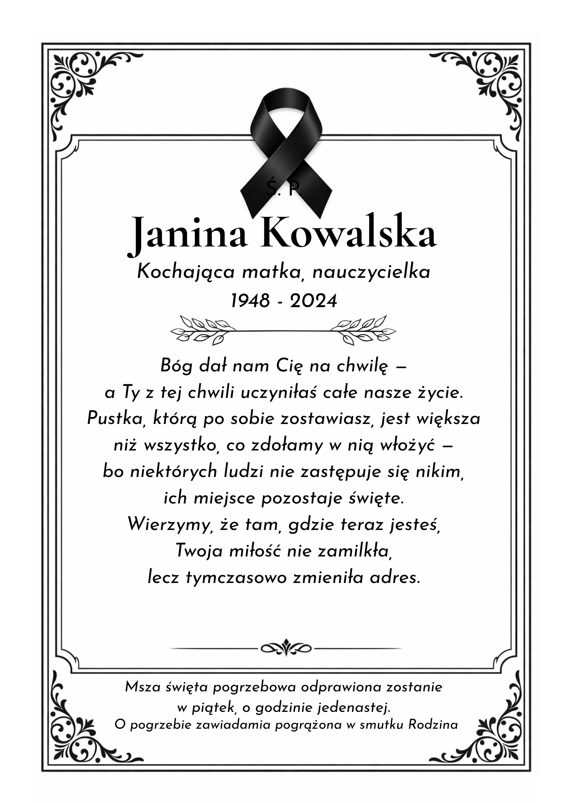

Jesteśmy tu, żeby pomóc
Wiemy, że w tej chwili masz głowę pełną spraw. Pożegnanie bliskiej osoby wymaga dziesiątek decyzji — i znalezienia słów, kiedy słów nie ma. Jesteśmy tu po to, żeby te słowa napisać. Spokojnie, bez pośpiechu, z szacunkiem dla Twojego bliskiego.
Płatność jednorazowa · Brak subskrypcji · Gotowe w 24 godziny
Co znajdziesz w pakiecie
Każdy tekst piszemy na podstawie Twojej historii — nie z szablonu. Pytamy o to kim był Twój bliski: jak mówił, co lubił, co po sobie zostawił. To się czuje w każdym zdaniu.
Osobisty tekst o tym kim był Twój bliski. Nie suchy zapis dat — prawdziwa historia człowieka, którą warto zapamiętać.
Gotowa do wygłoszenia. 5–7 minut. Napisana tak, żebyś mógł ją przeczytać nawet przez łzy — bez szukania słów w ostatniej chwili.
Krótki, godny, napisany specjalnie dla tej jednej osoby. Bez pustych frazesów, które nie mówią nic o nikim.
Co załatwić, kiedy i jak zadbać o siebie w tym czasie. Praktyczny przewodnik po najtrudniejszych tygodniach — dla Ciebie i całej rodziny.
Proces
Trzy kroki. Żadnej techniki, żadnego stresu.
Wypełniasz prosty formularz — około 15 minut. Pytamy o to, kim był ten człowiek: jego historię, charakter, ważne momenty. Nie daty w tabelce.
W ciągu 24 godzin otrzymujesz gotowy PDF z kompletem dokumentów. Każdy tekst napisany specjalnie dla Ciebie — żadnych szablonów, żadnego kopiowania.
Nekrolog do gazety, mowa na jutro, klepsydra do drukarni. Wszystko gotowe. Nic do poprawiania, jeśli nie chcesz.
Pakiety
Jedna płatność. Żadnych subskrypcji. PDF w ciągu 24 godzin.
Wszystko w jednym PDF · Płatność jednorazowa · Brak subskrypcji
Przykład
Fragment przykładowego pakietu. Dane są fikcyjne — pokazujemy styl i ton, nie szablon.
Odeszła kobieta, która wiedziała, że miłość wymaga obecności — nie od święta, lecz każdego dnia. Przez całe życie wychowała trójkę dzieci i tysiące uczniów. Każde dziecko, które trafiło do jej klasy, zabierało do domu coś więcej niż wiedzę. Zabierało pewność, że ktoś w nie wierzy.
Jej róże kwitły do ostatniego lata. Jakby wiedziały, że ona jeszcze patrzy.
Była filarem — tym stałym, niezachwianym. Tym, którego brakowało, zanim zdążyłeś zauważyć, że jesteś o niego wsparty.
Zostało spojrzenie, które mówiło: wszystko będzie dobrze. Zostają ręce, które to spojrzenie wypełniały treścią.
Żegnamy Cię, Janino. — Rodzina
Nie wiedziałem, jak zacząć. Przez całą noc szukałem właściwych słów — i nie zdołałem ich znaleźć. Bo jak zamknąć w słowach kogoś, kto był dla mnie całym światem?
Mama uczyła. Ale nie tak, jak się zwykło mówić o nauczycielach — że przekazywali wiedzę, że byli cierpliwi, że poświęcali się dzieciom. Nie. Ona robiła coś trudniejszego: wchodziła do klasy i sprawiała, że każde dziecko czuło się tym Jedynym dzieckiem w pokoju. Przez czterdzieści lat. Bez jednego dnia, w którym by na to nie zasługiwało.
Klękała przy różach bez pośpiechu, gdy inni pędzili przez życie jak przez cudzy korytarz. Mówiła: nie możesz przyspieszyć kwitnienia. I teraz rozumiem, że to nie była mądrość ogrodnika. To była mądrość człowieka, który wiedział, że miłość wymaga czasu, że człowiek wyrasta powoli, że wszystko, co trwałe, musi najpierw zakorzenić się w ciemności.
Była filarem z rzadkiego minerału, takim, przy którym zatrzymuje się, gdy coś kwili, i ma się poczucie, że ten świat jednak trzyma. Sama walczyła w ciszy, żebyśmy mogli żyć głośno. Sama się bała, żebyśmy mogli czuć się bezpiecznie. To jest miłość, której nie definiuje żaden słownik.
Odeszłaś, Mamo — ale nie zniknęłaś. Zostałaś w tym, jak patrzymy na swoje dzieci. W tym, że umiemy jeszcze klęczeć przy ziemi i wierzyć, że coś zakwitnie. Dziękujemy, że byłaś. Dziękujemy, że nauczyłaś nas, jak być.
Pakiet Pełny
30 dni konkretnego wsparcia — podzielone na etapy, dopasowane do Twojej sytuacji. Nie ogólne porady, ale praktyczny przewodnik po najtrudniejszych tygodniach.
Gotowe do druku
Otrzymujesz gotowy plik PDF — z elegancką ramką, ozdobnikami i tekstem napisanym specjalnie dla Twojego bliskiego. Idziesz prosto do drukarni.

Przykład poglądowy — Twoja klepsydra będzie zawierać dane i tekst Twojego bliskiego.
Piszemy o człowieku,
nie o śmierci.
Każda osoba zasługuje na pożegnanie, które naprawdę o niej mówi. Nie na zdania wyjęte z szablonu, które mogłyby dotyczyć kogokolwiek. Dlatego zanim napiszemy pierwsze słowo, słuchamy — o tym, jak wyglądał zwykły dzień tej osoby, co ją śmieszyło, czym się zajmowała, kogo kochała.
Rozumiemy, że nie każdy umie teraz pisać. Że słowa nie przychodzą. Że jest za dużo spraw naraz. Jesteśmy tu po to, żeby ten jeden ciężar z Ciebie zdjąć.
Zespół ostatnieslowa.pl